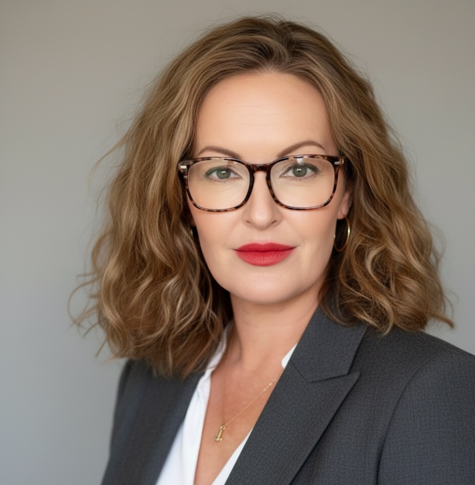

The full story
I'm Julie Hendry. FBCS. Lay Member, ICAEW Regulation & Conduct Board. Treasurer, BCS ICT Ethics Specialist Group. MSc in Psychology, BSc in Computer Studies. Thirty years of diagnosing what's actually broken before prescribing the fix.
I've worked in technology transformation for thirty years. Not as a theorist, and not as someone who applies the same framework to every problem. I use whatever the situation needs. Sometimes that is agile methodology. More often it is understanding the organisational psychology first. The diagnosis matters more than the prescription.
Career timeline
The Foundation
I started building software in 1996 and spent eleven years across financial services and insurance. At SunGard (Sherwood International, now FIS), I designed global life and pensions insurance platforms deployed across four continents, leading a 50-person team on a pan-Asian programme for New York Life. At JP Morgan, I built global asset rebalancing systems. In 2007, at Guidewire, I ran a $15M core-systems replacement for The Co-operators, Canada's largest insurer.
I learned early that transformation fails when you treat people as resources to be optimised. And I learned that understanding the problem is always more important than the solution you bring to it.
Cow Consulting, Community Leadership and Interim Work
From 2007, I became deeply involved in the agile community's development in the UK. I was an Agile Alliance sponsor, in the first UK cohort for SAFe (trained by Dean Leffingwell), and one of the first 150 Certified Scrum Professionals worldwide, serving on the 12-person expert panel that reviewed CSP applications. I completed Gerald Weinberg's Problem Solving Leadership programme in Albuquerque.
During this period I founded and ran Cow Consulting (Founder and Director, 2007 to 2020), writing and speaking about what I saw going wrong: the commoditisation of expertise into certifications, frameworks sold as silver bullets, organisations poorly served by the industry around them. I am a named adviser and collaborator on PRINCE2 Agile (AXELOS, 2015) and contributed to Agendashift, judged the UK Agile Awards and UK IT Industry Awards, and spoke at the Scrum Gathering Bangalore and Agile Tour London. The industry caught up to the commoditisation critique by 2015. By then I was focused on delivery.
Cow Consulting was also the vehicle for thirteen years of interim and consulting engagements: RBS, The Guardian, Royal London, AXA Direct Swiftcover, Applied Systems, Standard Life, American Express, Barclays, Tesco, Sky, the BBC, News International, Ordnance Survey and Grand Parade, and the GDS, ESFA, HMRC and Abcam mandates below. Speirs Downs Ltd succeeded it in 2020 and is the vehicle for Travis Perkins and CyberSafeSchools.
Government and Public Sector
My first government coaching role was at Ordnance Survey in 2011, working with teams developing geospatial software. That led to an invitation to join GDS (Cabinet Office) in 2013, where I coached senior leaders and delivery teams across government under the Digital by Default strategy, strengthening Exemplar programmes including the team that replaced paper driving licence counterparts for 40 million licence holders. I authored "Governance principles for agile service delivery," adopted across UK government, and trained and coached over 200 civil servants in agile practices.
At ESFA, I led a 150-person cross-supplier team delivering the digital Apprenticeship Service, which went on to distribute £2.7 billion a year in levy funds. Accountable for governance, compliance reporting, and cross-supplier risk management across the programme. At HMRC, I led the agile delivery teams through their delivery managers, coached the programme and product managers, owned the delivery tooling and introduced DevOps at RCDTS during the post-Aspire digital transformation.
Executive Leadership
As interim VP Global Engineering at Abcam (AIM-listed life sciences company, £260 million revenue; a £10 million budget and 100 to 200 people including suppliers, reporting to the CIO), I owned delivery, engineering, and operations across the UK, China, the US, and the EU. Abcam had delivered double-digit growth for four consecutive years but was stuck entering its fifth. I created the business's first unified technology portfolio, which allowed us to identify and prioritise high-value projects: the stack under the shopfront barely changed, the rails did. That included Oracle ERP integration, and an AWS migration and contract renegotiation that together cut IT operating costs by 40%, and developing technology partnerships for the Chinese market as we built out the China IT division. Portfolio strategy, vendor partnerships, and team transformation together, not one without the others.
After completing my MSc in Psychology at the University of Strathclyde (Distinction, 2020), researching what pervasive technology does to human cognitive capability, I returned to executive delivery. At Cognizant as Director of Delivery, and then at Travis Perkins (FTSE 250, £4.9 billion revenue, reporting to the CIO) as interim Group Director of Software Delivery, where I brought together all the group's brands under a single software delivery function for the first time, building capability across UK and Ukraine operations and managing strategic vendor partnerships. When the Ukraine conflict began, I led crisis management: all 100 colleagues were kept safe, business continuity maintained throughout.
As interim CEO of CyberSafeSchools (2022 to 2024, through Speirs Downs Ltd), I held P&L responsibility for a SaaS cyber safety provider helping UK schools meet DfE and NCSC cyber security standards. The platform remains live.
From 2024 to 2026, still through Speirs Downs, I turned to research and governance: I wrote CHART, registered on OSF and published on SSRN, co-founded beò, led the BCS ICT Ethics Specialist Group's written evidence to the House of Commons Education Committee on AI in education, and joined the ICAEW Regulation & Conduct Board in July 2026. Alongside that, I sat on the Steering Group for the BCS IT Leaders Forum annual conference and co-chaired its opening session in October 2026, and was part of the founding group of the AI Ethical Expert Concordat.
beò and What Comes Next
beò is Scottish Gaelic for "alive." beò is a research company on what technology does to human cognition. It has shipped Flourish, a consumer digital-wellbeing app, and prototyped workplace assessment tools. My MSc research (Hendry, 2020, n=82) found that a widely used smartphone usage scale failed to predict actual device behaviour (r = .198, ns). Organisations are now making the same measurement mistake with AI: satisfaction surveys tell you how people feel about Copilot or ChatGPT, not whether these tools are changing how they think. beò was built to close that gap.
The research directly informs my executive work. Understanding what AI actually does to the way people think, decide, and collaborate makes me more credible in AI transformation conversations. As co-founder and CTO, I set the technical direction and the research methodology.
In July 2026 I was appointed Lay Member (Transformation) of the ICAEW Regulation & Conduct Board, a public-interest appointment providing independent oversight of the regulation of the accountancy profession.
I take on interim, fractional and permanent mandates at Group Director and VP level with CIO-level scope: organisations that need someone to take full ownership of the technology estate, diagnose what's actually broken, and fix it. Thirty years across government, financial services and insurance, life sciences, retail and media have given me one clear conviction: the next generation of CIO challenges are about people and technology together, not technology alone.
The formal record
- Fellow of the British Computer Society (FBCS) Nominated by a Fellow and peer-assessed, 2024
- Lay Member (Transformation), ICAEW Regulation & Conduct Board Public-interest appointment, 2026
- Treasurer, BCS ICT Ethics Specialist Group
- Co-chaired the opening session, BCS IT Leaders Forum Annual Conference and Symposium, London, 5 October 2026 Steering Group member
- Founding group member, AI Ethical Expert Concordat 2026, alongside the Tortora Brayda Institute for AI and Cybersecurity
- Visiting Researcher University of Strathclyde, 2020-21
- MSc Psychology (Distinction) University of Strathclyde
- BSc Computer Studies Glasgow Caledonian University
- Data Science for Executives ColumbiaX via edX, 2022
- Quantum Computing Linux Foundation, 2025
- Agile Alliance Sponsor 2008 – 2012
- Contributor to AXELOS best-practice guidance 2014 – 2022
- Named adviser and collaborator, PRINCE2 Agile (AXELOS, 2015)
- Agendashift Contributor
- CTO Craft Panel Member
- Agnostic Agile Panel Member
- Judge, UK Agile Awards (2012) and UK IT Industry Awards, agile category 2010 – 2013
- One of the first 150 Certified Scrum Professionals worldwide
- Problem Solving Leadership with Gerald Weinberg Albuquerque, NM, 2013
- Published "Governance principles for agile service delivery" Adopted pan-UK government
- Keynote Speaker Scrum Gathering Bangalore (2011), Agile Tour London (2015); panellist, CTO Craft (2021)
- SAFe Program Consultant, 2013 First UK cohort, trained by Dean Leffingwell
- Certified Scrum Professional (CSP), 2009 Scrum Alliance
- Certified Scrum Master (CSM)
- Thirty years across: GDS, Cabinet Office, HMRC, ESFA, Abcam, Cognizant, Travis Perkins, CyberSafeSchools, American Express, JP Morgan, BBC, Barclays, Tesco, Sky, The Guardian, Royal London, Ordnance Survey, SunGard